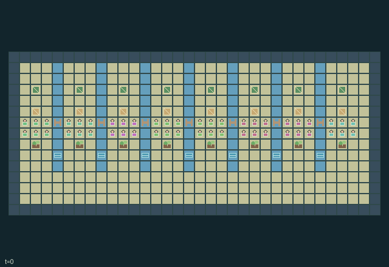

GI224 · Archipelago Councils

Original recording scope: 角色6实际端点抽帧预览；完整端点在播放器 · Mode: 实际诊断回放
Additional generated state replay (different trajectory / full-state debug)

Develop all eight towns through two timber and two grain deliveries each while negotiating shared transport and drainage.
Identity and original contract
48 independently actionable roles; 18 discrete commands per role; 681 native observation columns per role; original horizon 640 steps. Declared per-step reward range: -1 to 5. Observation regime: partially_observable.
Source SHA-256: 197db96ab84b89e440a2d4e381d2eb42dcfc37140913d3b7374a84f46694bd4b
The objective, rewards, population, map and horizon remain original. A preview is not a success claim.
Objective and gameplay
Develop all eight towns through two timber and two grain deliveries each while negotiating shared transport and drainage.
A two-investment bridge opens a water cell to everyone but reduces downstream water without a canal. Ferries share finite fuel and cooldown; port stewards decide foreign access. Messengers broadcast local reef/tide readings with explicit age. A longer southern coast road bypasses these local dependencies.
- 48 settlers in eight towns. Every actor moves and carries materials; tools change at the actor's own town.
- Two timber investments make a bridge walkable. A canal prevents its surge damage and downstream water diversion; each investment uses one carried timber.
- A ferry moves an actor across its two-cell channel. One shared fuel unit and cooldown are consumed; town owners can close their port to outsiders.
- At high tide a reef crossing requires a navigator; a failed crossing attempt stays in place. Any actor can refuel a ferry.
- A messenger spends a fuel pack to broadcast its town's reef/tide chart for 16 ticks. Charts are public and can become stale.
- A complete bridge is protected from collapse while occupied. Uncanalized construction can reduce the next town's seasonal farm renewal.
- Deliver two timber and two grain to each town for development. Aid rewards the beneficiary town and the delivering actor.
- Grove/farm renewal is bounded to eight cycles. Finite town fuel and the longer southern coastal road make local investment and reciprocal transport distinct choices.
Ending: Natural completion when all eight towns have both delivery counters equal to 2; otherwise truncate at 640.
What this game explores
Information, sensing & communication: Who knows a fact, when it was measured, and whether it was communicated are separate state variables. Test memory or communication using only the same role-visible evidence.
Resource commons & externalities: An action changes a persistent resource or burden that another role also encounters. Compare extraction with maintenance and record the downstream resource trajectory.
Commitment, exchange & governance: Promises consume time, liquidity, access or material. Separate an announced agreement from a binding commitment and from its eventual delivery; log cancellation and expiry too.
Complementary production & service: A useful outcome requires ordered stages, scarce equipment or another role's capability. Measure real completed products and resource circulation rather than counting intermediate actions as success.
Joint transport & shared access: Positions, load geometry, occupancy and persistent access constrain whose action can succeed next. Distinguish physical handoff, shared controls and simultaneous force from a cosmetic cooperation label.
These are questions supported by rule structure, not observed learning effects.
Play it: operating walkthrough
crucibles play --game gi224Keep Python running and open its printed address. Select this game, set a seed and press Create session. The game itself is always English.
Assign a role range to Host with Assign / take over, or Assign all roles. Invite a second participant with Create player invitation, then assign a disjoint subset. Every original role is available.
For every owned role choose a legal command and press Queue. Arrow keys / WASD queue a declared directional action for the current role camera when available. Space or Advance one joint step advances everyone together. Non-directional games use the selectors.
Unqueued roles use the labelled untrained uniform-legal policy. Take over or release roles before the next step without resetting. Full-state debug is privileged and permanently logged; role cameras preserve permissions. Close the session to retain logs. Server restart does not restore sessions.
Complete command reference
IDs and English labels exactly match the manifest. Availability depends on role, resources, location and phase. An available action can still have no productive effect.
0·Wait
1·Face or move north
2·Face or move east
3·Face or move south
4·Face or move west
5·Cut grove timber with builder
6·Harvest farm grain with farmer
7·Pass wood, grain or fuel to nearest actor
8·Deliver timber to town
9·Deliver grain to town
10·Build or repair adjacent bridge with builder
11·Build adjacent drainage canal with builder
12·Use adjacent ferry crossing
13·Refuel adjacent ferry
14·Broadcast chart with messenger
15·Collect town fuel pack
16·Cycle tool at home town
17·Toggle home port access with steward
Roles and capability identifiers
These original role names describe capabilities, not interchangeable skins. Check each owned role's legal selector before planning handoffs.
agent_0·crew 0 / initial builder / actor 0
agent_1·crew 0 / initial farmer / actor 1
agent_2·crew 0 / initial navigator / actor 2
agent_3·crew 0 / initial messenger / actor 3
agent_4·crew 0 / initial steward / actor 4
agent_5·crew 0 / initial trader / actor 5
agent_6·crew 1 / initial builder / actor 6
agent_7·crew 1 / initial farmer / actor 7
agent_8·crew 1 / initial navigator / actor 8
agent_9·crew 1 / initial messenger / actor 9
agent_10·crew 1 / initial steward / actor 10
agent_11·crew 1 / initial trader / actor 11
agent_12·crew 2 / initial builder / actor 12
agent_13·crew 2 / initial farmer / actor 13
agent_14·crew 2 / initial navigator / actor 14
agent_15·crew 2 / initial messenger / actor 15
agent_16·crew 2 / initial steward / actor 16
agent_17·crew 2 / initial trader / actor 17
agent_18·crew 3 / initial builder / actor 18
agent_19·crew 3 / initial farmer / actor 19
agent_20·crew 3 / initial navigator / actor 20
agent_21·crew 3 / initial messenger / actor 21
agent_22·crew 3 / initial steward / actor 22
agent_23·crew 3 / initial trader / actor 23
agent_24·crew 4 / initial builder / actor 24
agent_25·crew 4 / initial farmer / actor 25
agent_26·crew 4 / initial navigator / actor 26
agent_27·crew 4 / initial messenger / actor 27
agent_28·crew 4 / initial steward / actor 28
agent_29·crew 4 / initial trader / actor 29
agent_30·crew 5 / initial builder / actor 30
agent_31·crew 5 / initial farmer / actor 31
agent_32·crew 5 / initial navigator / actor 32
agent_33·crew 5 / initial messenger / actor 33
agent_34·crew 5 / initial steward / actor 34
agent_35·crew 5 / initial trader / actor 35
agent_36·crew 6 / initial builder / actor 36
agent_37·crew 6 / initial farmer / actor 37
agent_38·crew 6 / initial navigator / actor 38
agent_39·crew 6 / initial messenger / actor 39
agent_40·crew 6 / initial steward / actor 40
agent_41·crew 6 / initial trader / actor 41
agent_42·crew 7 / initial builder / actor 42
agent_43·crew 7 / initial farmer / actor 43
agent_44·crew 7 / initial navigator / actor 44
agent_45·crew 7 / initial messenger / actor 45
agent_46·crew 7 / initial steward / actor 46
agent_47·crew 7 / initial trader / actor 47
Information and observation permissions
Self fields and declared public counters/charts are exact. For each entity slot, visibility is active AND Chebyshev distance <= 3 from the role's current position; hidden slots have visible=0 and all values zero. Actor slots use the same radius. Patches cover dx,dy -3..3 in row-major order, outside=-1. Public static bounds, indexing and action meanings do not expose hidden current state. Legal masks are native affordance information; no renderer-only policy information. Human and policy actors use the same scalar action and transition.
The GIF is full-state debug and may reveal hidden entities or private state. Train on obs[agent], not the picture, state tree or another role's private row. Field slices and visibility are in the original manifest.
Reinforcement-learning integration
import jax
from crucibles_jaxmarl import make
env = make("gi224")
key = jax.random.PRNGKey(0)
key, rk, ak, sk = jax.random.split(key, 4)
obs, state = jax.jit(env.reset)(rk)
actions = env.sample_actions(ak, state)
obs, state, rewards, dones, info = jax.jit(env.step_env)(sk, state, actions)
done = dones["__all__"]Observations are float32 vectors of width 681; actions are scalar int32; masks have 18 entries. Supply all 48 roles each transition. Masked sampling is an engineering reference, not a trained learner.
step_env retains terminal data without reset. step performs outer autoreset and keeps terminal data in info["raw_state"] and info["raw_observation"]. Use dones["__all__"] for episode boundaries; separate completion, failure and time limit in analysis.
JIT or vmap equal identities and shapes. Split independent reset, policy and transition keys. Group different shapes explicitly; do not shrink the population or horizon. Host rendering stays outside training.
Training questions and fair evaluation
Define valid completion from the objective before fitting. Preserve original rewards and also report real deliveries/services, losses, resource state, unresolved episodes and per-role returns. Animation is not a reward signal.
Who knows a fact, when it was measured, and whether it was communicated are separate state variables. Test memory or communication using only the same role-visible evidence.
An action changes a persistent resource or burden that another role also encounters. Compare extraction with maintenance and record the downstream resource trajectory.
Promises consume time, liquidity, access or material. Separate an announced agreement from a binding commitment and from its eventual delivery; log cancellation and expiry too.
A useful outcome requires ordered stages, scarce equipment or another role's capability. Measure real completed products and resource circulation rather than counting intermediate actions as success.
Positions, load geometry, occupancy and persistent access constrain whose action can succeed next. Distinguish physical handoff, shared controls and simultaneous force from a cosmetic cooperation label.
Compare memory, communication or centralized critics under matched actor information. Declare critic access; keep actor inputs role-filtered. Match partner/opponent distributions, masks, compute and checkpoint selection. Final tests never enter fitting or selection.
Independent training runs or source-pairing blocks are inferential units; episodes from one policy are not independent training replications. Save hashes, keys, versions, device, time and cost. Negative, zero, failed and indeterminate outcomes are valid. No trained checkpoint or target score is supplied.
Classification and evidence
Overlapping editorial labels are reading aids, not proof of novelty, difficulty, strategic equivalence or learning effects.
- Information, sensing & communication
- Evidence
manifest.task.interaction: A two-investment bridge opens a water cell to everyone but reduces downstream water without a canal. Ferries share finite fuel and cooldown; port stewards decide foreign access. Messengers broadcast local reef/tide readings with explicit age. A longer southern coast road bypasses these local dependencies.
- Evidence
manifest.task.observation_access: Self fields and declared public counters/charts are exact. For each entity slot, visibility is active AND Chebyshev distance <= 3 from the role's current position; hidden slots have visible=0 and all values zero. Actor slots use the same radius. Patches cover dx,dy -3..3 in row-major order, outside=-1. Public static bounds, indexing and action meanings do not expose hidden current state. Legal masks are native affordance information; no renderer-only policy information. Human and policy actors use the same scalar action and transition.
- Evidence
manifest.actions.14: Broadcast chart with messenger
- Resource commons & externalities
- Evidence
manifest.task.interaction: A two-investment bridge opens a water cell to everyone but reduces downstream water without a canal. Ferries share finite fuel and cooldown; port stewards decide foreign access. Messengers broadcast local reef/tide readings with explicit age. A longer southern coast road bypasses these local dependencies.
- Evidence
scene.rules.1: Two timber investments make a bridge walkable. A canal prevents its surge damage and downstream water diversion; each investment uses one carried timber.
- Commitment, exchange & governance
- Evidence
manifest.task.objective: Develop all eight towns through two timber and two grain deliveries each while negotiating shared transport and drainage.
- Complementary production & service
- Evidence
manifest.task.observation_access: Self fields and declared public counters/charts are exact. For each entity slot, visibility is active AND Chebyshev distance <= 3 from the role's current position; hidden slots have visible=0 and all values zero. Actor slots use the same radius. Patches cover dx,dy -3..3 in row-major order, outside=-1. Public static bounds, indexing and action meanings do not expose hidden current state. Legal masks are native affordance information; no renderer-only policy information. Human and policy actors use the same scalar action and transition.
- Evidence
manifest.actions.10: Build or repair adjacent bridge with builder
- Joint transport & shared access
- Evidence
manifest.task.objective: Develop all eight towns through two timber and two grain deliveries each while negotiating shared transport and drainage.
- Evidence
manifest.task.interaction: A two-investment bridge opens a water cell to everyone but reduces downstream water without a canal. Ferries share finite fuel and cooldown; port stewards decide foreign access. Messengers broadcast local reef/tide readings with explicit age. A longer southern coast road bypasses these local dependencies.
- Evidence
manifest.actions.8: Deliver timber to town
Source, receipts and preview limits
The additional generated state GIF replays saved untrained legal actions through the original kernel. At most 25 actual endpoints include initial and terminal state; no invented interpolation. It is full-state debug, not the role observation. Where an original scene preview exists, it is displayed first with its own recorded information scope. The two recordings may use different trajectories and views.
Original source, observation slices, manifest and mechanism
Native receipt · Presentation receipt
Engineering passes do not establish learning. Nonzero floating differences remain recorded and undetermined; no new tolerance was introduced. Human scores remain unverified.